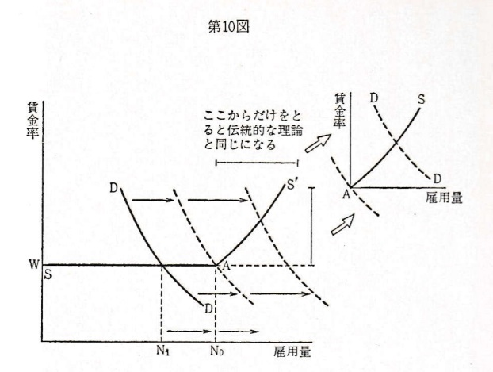
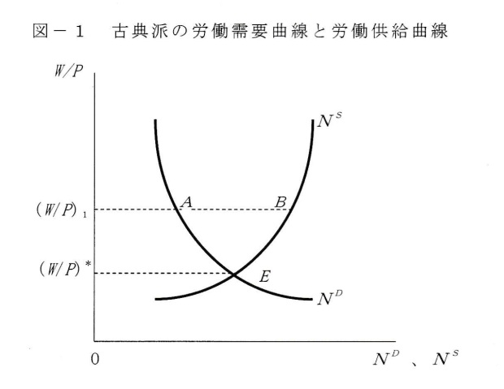
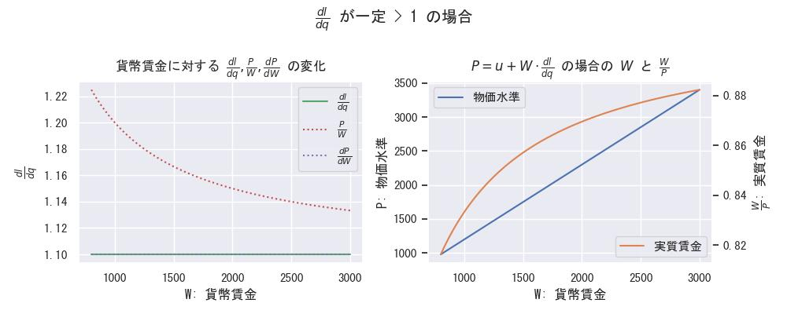
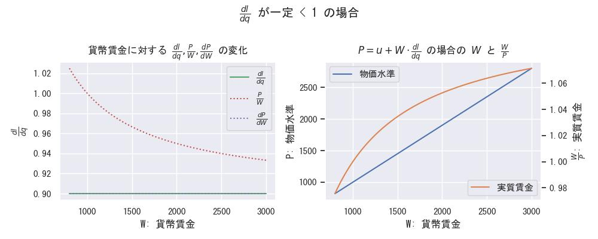
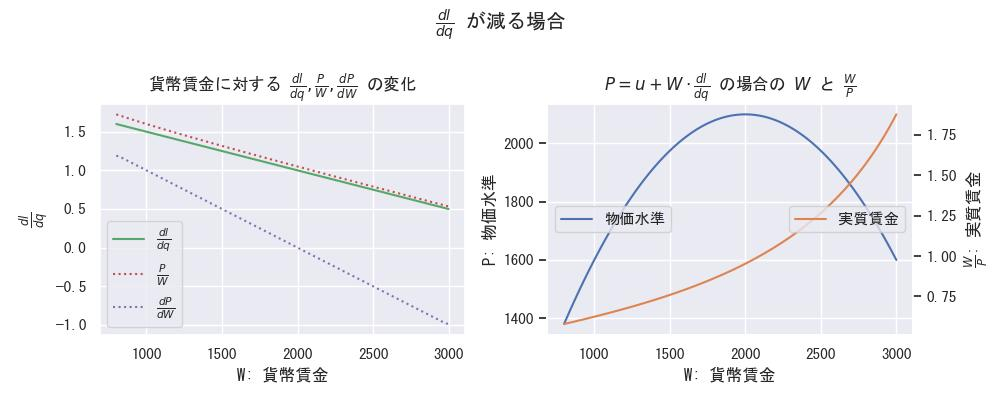
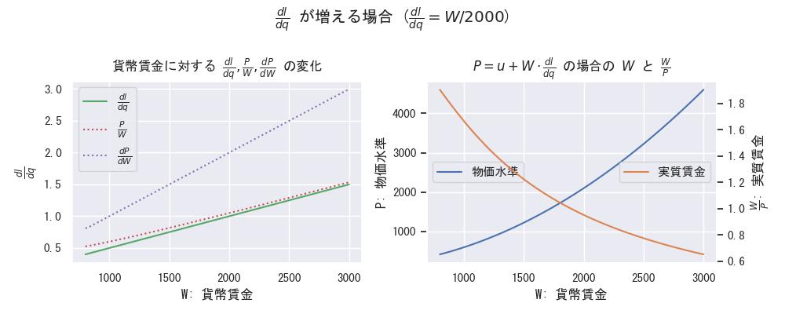

本荘2019解読メモ
■ 本荘, 2019 の論点整理
・ まとめ ・ この表は作業中のもので、議論の進行に合わせて更新します。| 理論区分 | 要点 | 非自発的失業 | 自発的失業 | 分析・対策 | 評価・結果 |
|---|---|---|---|---|---|
| 古典派理論 | 労働需給曲線 | 区別なし | 大恐慌の失業が説明できない（問題状況と認識しない） | ||
| ケインズ一般理論 | 労働需給曲線（一般化） | 非自発的な失業が問題であり、賃金操作では解決しない | 有効需要の増出が必須であると認識する | ||
| 本荘2019, p.7-1 | $ \frac{d \pi}{d q} = 0 $ | 貨幣賃金率・実質賃金率の逆向き変動の法則 | |||
| 本荘2019, p.7-2 | $ W = P \cdot Q \cdot S, \frac{d S}{d t} = 0 $ | 貨幣賃金率・実質賃金率の逆向き変動の法則 | |||
| 本荘2019, p.9 | $ \frac{d \pi}{d l} = 0 $ | ||||
| 本荘2019, p.12 | 岩田2013 第一の矢 | 量的・質的金融緩和政策 | ハイパワード・マネー増加するも、マネー・ストック増加せず | ||
| 本荘2019, p.18 | $ W = P \cdot Q \cdot S, \frac{d S}{d t} \neq 0 $ | ||||
| 本荘2019, p.18 | 雇用形態（正規・非正規） | ||||
■ 伊東光晴さんの本（2006）から
|
古典派の労働需給曲線
from p.61, 2006, 伊東 光晴 |
ケインズの労働需給曲線
from p.76, 2006, 伊東 光晴 |
|
群盲象を評す from Wikipedia |
ケインズの労働需給曲線における古典派の説明範囲  from p.100, 1962, 伊東 光晴 (derived from L. R. Klein) |
|
■ 本荘さんの論文（2019）から
(Ⅰ) 賃金は労働の［価値］限界生産物に等しい。
The wage is equal to the marginal product of labour.
(Ⅱ) 一定の労働量が雇用されている場合、賃金の効用はその雇用量の限界負効用に等しい。
The utility of the wage when a given volume of labour is employed
is equal to the marginal disutility of that amount of employment.
|

from 2019, 本荘 康生 |

from 2019, 本荘 康生 |
まず、貨幣賃金を $W$、物価水準を $P$ として、実質賃金の定義 $ Y = \frac{W}{P}$ から、
$ \frac{d Y}{d W} = \frac{1}{P^2} (P - W \frac{d P}{d W}) = \frac{W}{P^2}(\frac{P}{W} - \frac{d P}{d W}) $
すなわち、 $\frac{W}{P}$ と $W$ の変動の相反は、$ \frac{P}{W} < \frac{d P}{d W} $ のときに限って発生する。
次に、この条件と利潤計算式 $ \pi = P \cdot q - (FC + u \cdot q + W \cdot l)$ との関係を見るため、
利潤最大化条件 $ \frac{d \pi}{d q} = 0 $ から $ P = u + W \cdot \frac{d l}{d q} $ を得て、
上記の相反条件は、$u$ が $W$ に依存しないと仮定すれば、$ \frac{d l}{d q} $ を使って、次のようにも書けるが、
$ \frac{P}{W} < \frac{d P}{d W} = \frac{d l}{d q} + W \cdot \frac{d}{d W}(\frac{d l}{d q}) $
右辺第２項の複雑さから、使いやすいものではないので、$ \frac{d l}{d q} $ を使った説明は分かりにくくなる可能性がある。
（すなわち、左辺で説明した方が分かりやすい）
|  |  |
|  |  |
 |  |